Lead the team
I lead a cross-functional team of software, data and ML engineers. That means hiring and onboarding, regular 1:1s and career plans, and mentoring, plus a culture of code review, documentation and knowledge-sharing sessions.
Dublin, Ireland
I'm Felipe, a Brazilian engineer who has lived in Ireland since 2017 and is now based in Dublin. I'm Head of Software Engineering at KinetikIQ, where we build a sensor-free movement-analysis platform used by professional sports teams. Before that I was an SDE intern on the Aurora team at AWS, and I'm now doing a part-time M.Sc. in Software Architecture & Design.
Now · 2023 to present
KinetikIQ builds a movement-analysis platform that uses the LiDAR depth camera in an iPhone or iPad Pro, plus computer vision, to capture how athletes and patients move, with no wearables. Coaches, sports scientists and physios get objective metrics and real-time feedback on technique, and professional sports teams use it.
I lead a cross-functional team of software, data and ML engineers. That means hiring and onboarding, regular 1:1s and career plans, and mentoring, plus a culture of code review, documentation and knowledge-sharing sessions.
With leadership and the commercial team, I turn customer needs and company goals into a roadmap. I scope projects, prioritise by value against effort, and run two-week sprints from planning to review. I also work with sports science on studies that validate our metrics against lab-grade measurements.
I own the technical direction across the iOS capture app, web dashboard, APIs, data pipeline and Azure infrastructure, and I stay hands-on: designing features, reviewing code and shipping. I've also brought AI-assisted development into the team's day-to-day workflow.
Each recording goes from the iOS app into a Databricks pipeline that turns 3D skeleton data into movement metrics. Spring Boot APIs then serve those metrics to the web dashboard from Cosmos DB and PostgreSQL. We're now rebuilding how metrics are calculated and rolling the new version out gradually behind feature flags.
A redesigned web dashboard with new metric views, drill-downs and live leaderboards that turn results into friendly competition between athletes.
An in-house flag system, so each feature can be tested internally and released on its own instead of in one big release.
The iOS app that records and analyses movement in real time. Upgraded to Unity 6, with automated tests covering the recording flow.
Passwordless, identity-based access from services to databases with Microsoft Entra ID and managed identities, secrets in Key Vault, and regular security reviews.
Schema changes now go through versioned, reviewable migrations with a clear history, deployed through gated staging and production environments.
A WebSocket notification service that pushes timely updates to both the web dashboard and the mobile app.
End-to-end browser tests for the dashboard and automated Unity tests for the app, so regressions are caught before they reach customers.
Staged pipelines (unit tests → staging → integration tests → pre-prod → production) with approval gates, plus Datadog logging, monitoring and alerting. Together these took platform uptime from 85% to 99.9%.
Selected work
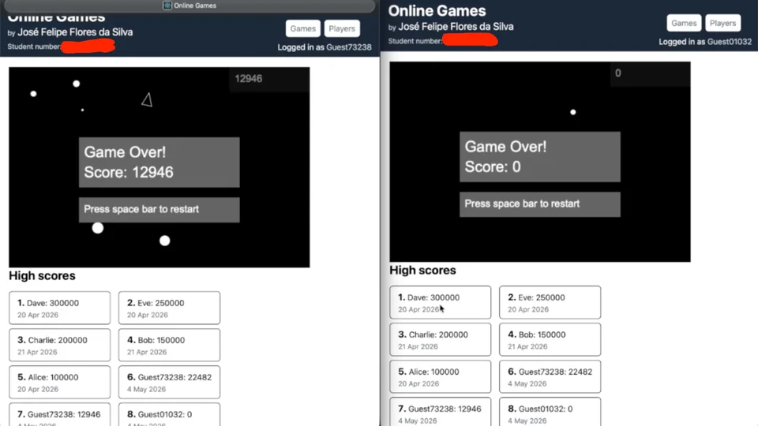
M.Sc. · Scalable Microservices
A containerised arcade platform: a React + TypeScript frontend, a Python games API exposing REST and gRPC, PostgreSQL, and separate WebSocket services that push live high scores to every player (shown here across two browsers) and run online multiplayer Pong.
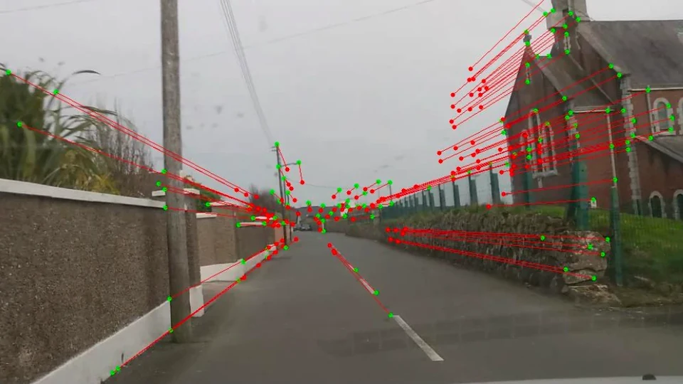
M.Sc. · Machine Vision
Camera calibration, feature tracking across frames, robust estimation of the fundamental and essential matrices with outlier rejection, and triangulation of tracked points into 3D. Closely related to the computer vision behind KinetikIQ.
int main() { … }
→ lexer · parser · AST · codegenM.Sc. · Language Processors
A full compiler for a subset of C: ANTLR lexer and parser, AST construction, semantic checks and code generation to assembly for a stack-based virtual machine.
class A ← B ← C
→ static analysisM.Sc. · Source Code Analysis
Analysers that parse real Java codebases and detect structural patterns and design smells, such as long inheritance chains, and report them for refactoring.
$ ./cloudctl ec2 launch
→ boto3 · ansible · k8sM.Sc. · Cloud Automation & Orchestration
Interactive CLIs that manage AWS resources ↗ (EC2, EBS, S3, RDS, CloudWatch alarms, plus Ansible provisioning) and Docker & Kubernetes ↗ workloads.
df.groupBy(…).agg(…)
→ batch · streamingM.Sc. · Big Data Processing
The same analytics solved with Spark Core RDDs and DataFrames, then with Spark Streaming versus Structured Streaming, comparing their trade-offs and limits.
solver.Solve(model)
→ optimal routesM.Sc. · Decision Analytics
Delivery-route optimisation for a logistics problem, plus a Sudoku solver, modelled as constraint programs with Google OR-Tools.
GET /assessments/{id}
→ spring boot · azureKinetikIQ · Core service
The core REST API behind the web dashboard and the iOS app. It manages organisations, athletes, assessments and results across PostgreSQL, Cosmos DB and Blob Storage, is secured with Azure AD B2C tokens, and runs on App Service behind Front Door.
ws.send(update)
→ dashboard · iOS appKinetikIQ · Real-time service
A WebSocket service that pushes live updates, such as results being ready, to the Vue dashboard and the Unity app at the same time.
skeleton → metrics
→ databricks pipelineKinetikIQ · Data platform
The processing pipeline that turns raw 3D skeleton data from each recording into movement metrics ready for the dashboard. I set its architecture and direction with the data engineering team.
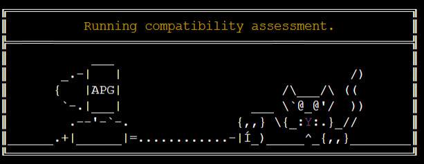
AWS · Internship
A PostgreSQL extension that lets customers check whether their Aurora schema (functions, procedures, triggers, tables) is compatible with Aurora Limitless Database. The assessment runs asynchronously in a separate database and uploads a report to S3.
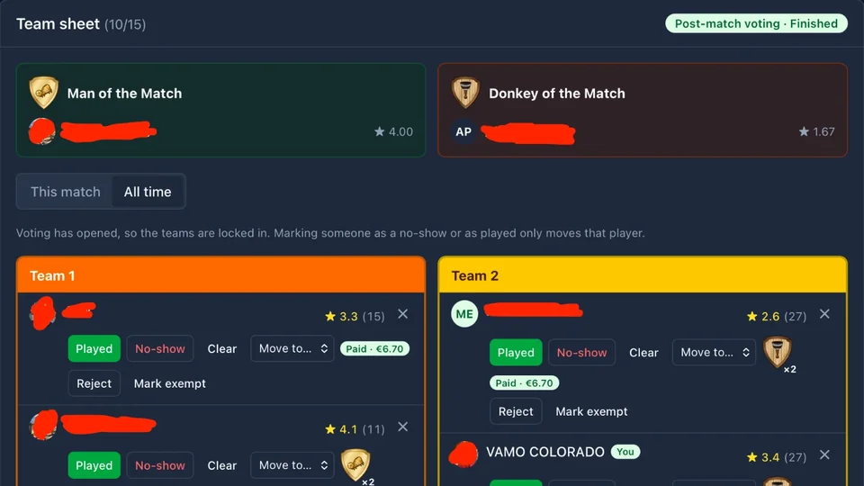
Personal · Live with friends
An invite-only web app for organising casual football with friends: match sign-ups, team sheets, payment tracking, and post-match voting that rates players and crowns a Man and a Donkey of the Match. There's also an admin area with an audit log. It sends push notifications, installs on the home screen, and works in English and Portuguese.
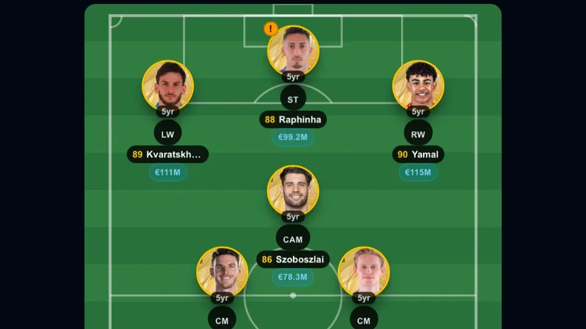
Personal · Live with friends
A multiplayer career game for friends, built on more than 17,000 real player ratings. Each manager builds a squad on a visual pitch, and the game adds a transfer market, trades between managers, drafts, seasons, and budgets with player values and salaries. Scripts import new rating updates in place without reseeding the database.
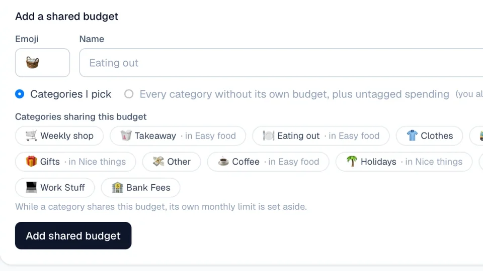
Personal · Household tool
A budget app for two people. It handles paydays and bills on any schedule, warns you live before a purchase tips you over budget, and imports bank-statement PDFs entirely in the browser, remembering the category you chose for each shop. It also has category budgets that can be grouped to share one limit, savings pots, and suggested budgets based on your past six months.
S · A · B · C
→ generated by AIPersonal · Side project
Describe a topic and an LLM generates a ready-made tier list, returned as structured JSON with titles and images, which you can then rearrange with drag and drop.
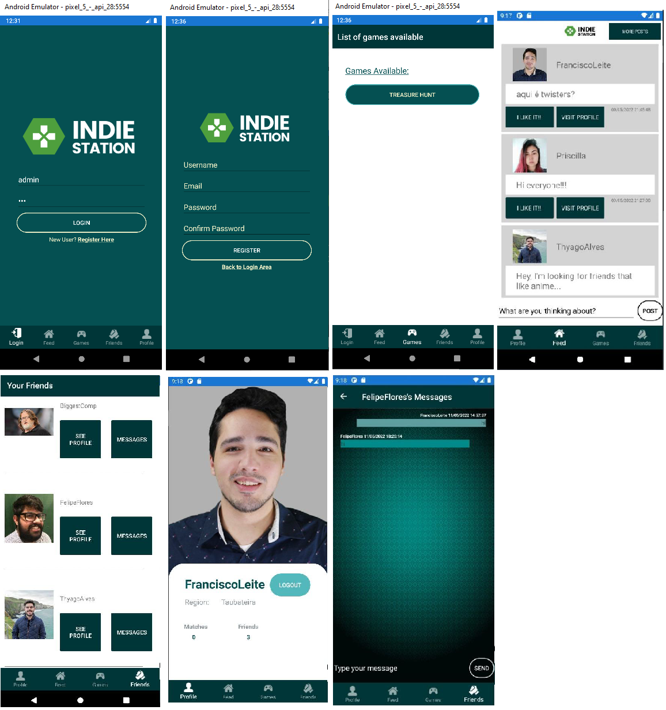
Final year project
A cross-platform social app with a built-in online game, backed by a self-hosted MongoDB on EC2 and a Node.js REST API.
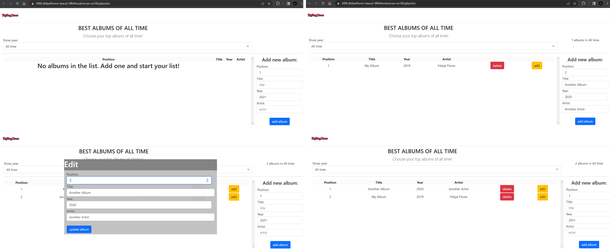
Web app
Build and curate your own all-time album list. React frontend, Express API, MongoDB Atlas.
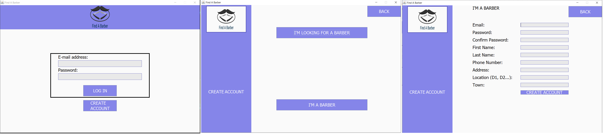
Desktop app
Booking system for barbers and customers, with a self-hosted MySQL database on Google Cloud.
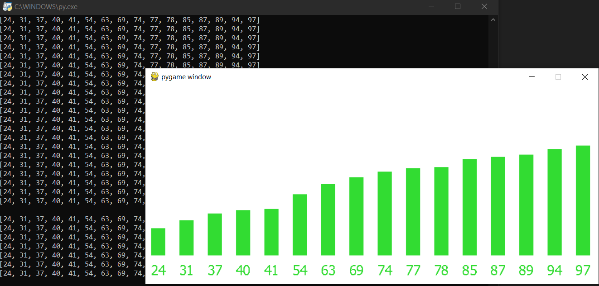
Teaching tool
Written during class to help classmates see the difference between bubble sort and insertion sort.
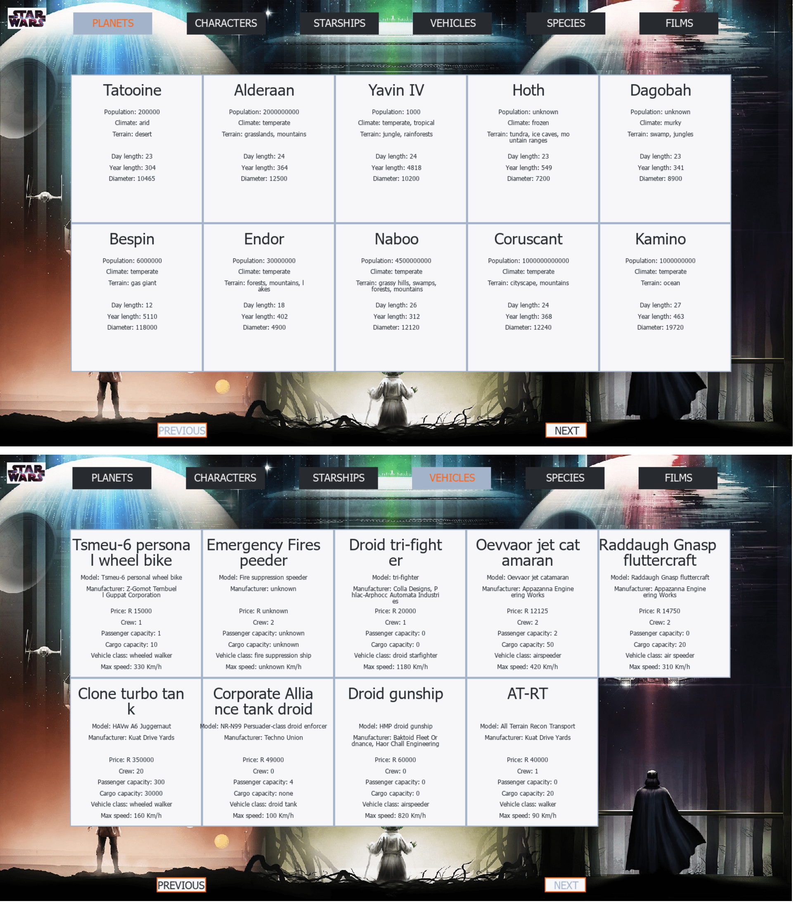
API client
Browses the Star Wars API in a quick, friendly interface.
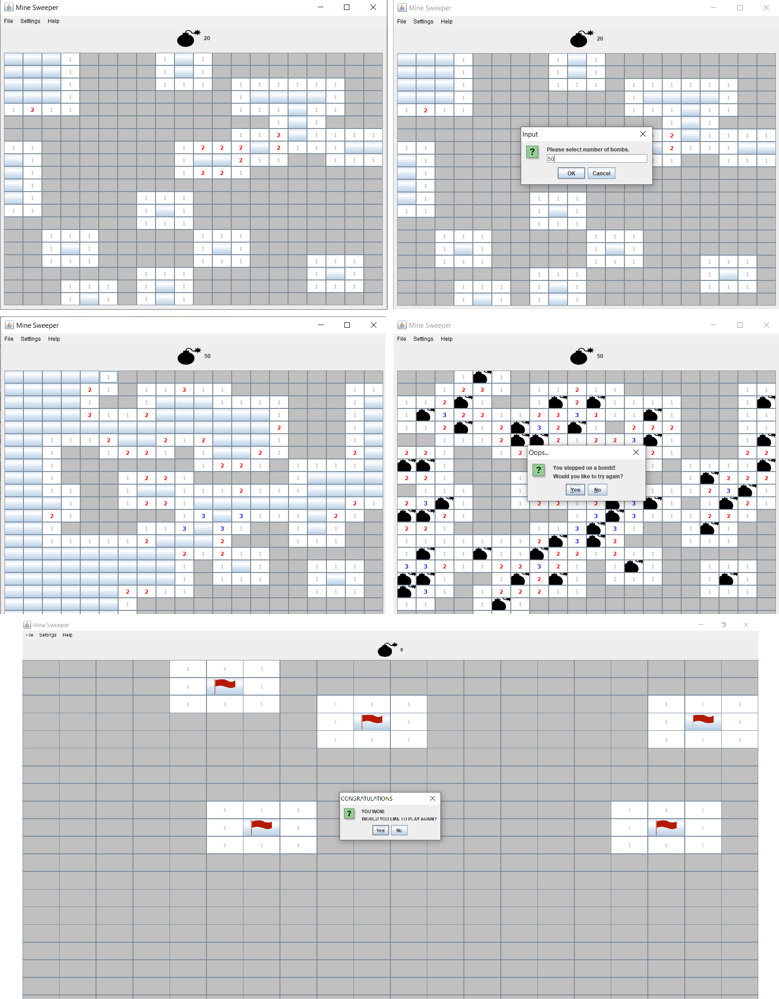
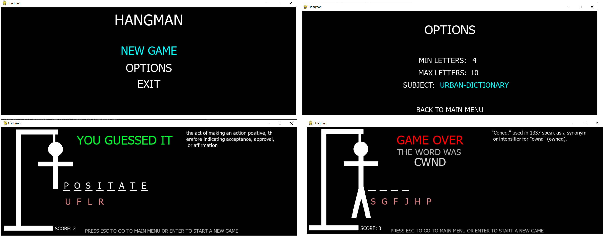
Game
Hangman with words scraped at random from sources like Urban Dictionary and Vocabulary.com.
2013 → today
From psychology research in Porto Alegre, through coffee competitions and an IT degree in Dublin, to leading engineering at a cutting-edge sports-tech company.
Munster Technological University
Studying alongside my full-time role, with a focus on how large systems are designed, built and run.
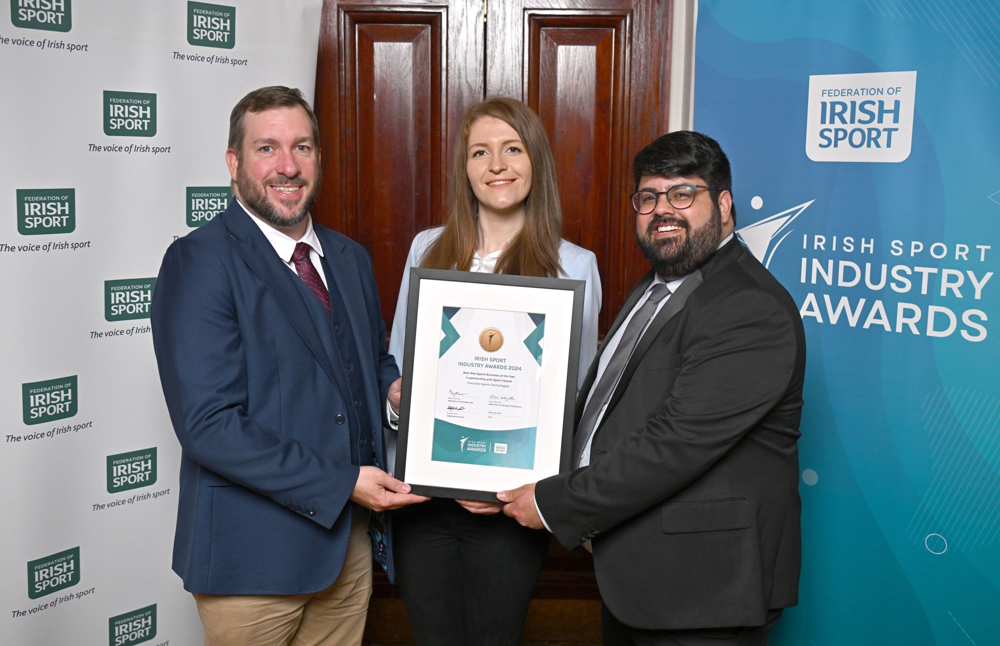
Amazon Web Services · Aurora
CCT College Dublin · Mentoring Academy
Helped students from every technology programme at the college with their questions.
🏆 Student of the Year 2022, awarded for the highest grades.
Bewley's Oriental Café
🏆 2022 Irish Coffee in Good Spirits champion. Represented Ireland at World of Coffee in Milan.
UFRGS · LPNeC
Contributions
Universidade Federal do Rio Grande do Sul
CCAA (CCLS)
Toolbox
Open to a chat about engineering leadership, sports tech, or AI in products.
josefelipefloress@gmail.com